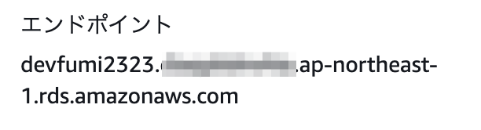

目次
AWS ドキュメントメモ
概要
-
DBインスタンス全体をバックアップする
RDS は DB インスタンスのストレージボリュームのスナップショットを作成し、個々のデータベースだけではなく、DB インスタンス全体をバックアップします。
DB スナップショットを手動で作成して、DB インスタンスを手動でバックアップすることもできる
DB インスタンスの最初のスナップショットには、フル DB インスタンスのデータが含まれる
同じ DB インスタンスの後続のスナップショットは増分です。つまり、直近のスナップショット以降に変更されたデータのみが保存される
バックアップストレージ
リージョンあたり最大 100 個の手動スナップショットを作成できる
1 つの AWS リージョンで保持できる自動バックアップの最大数は 40 個
バックアップの保存期間
-
自動バックアップ:
コンソールを使用して DB インスタンスを作成した場合、デフォルトのバックアップ保持期間は 7 日
バックアップ保持期間は変更できる (0 ～ 35 日間) ※
0== 自動バックアップが無効
-
手動スナップショット:
スナップショットは期限切れになりません。
自動バックアップとは異なり、手動スナップショットはバックアップ保持期間の影響を受けません。
DB スナップショットの作成
Single-AZ DB インスタンスでこの DB スナップショットを作成すると、I/O が短時間中断します。この時間は、DB インスタンスのサイズやクラスによって異なり、数秒から数分。
MariaDB、MySQL、Oracle、PostgreSQL の場合、バックアップはスタンバイから取得されるため、マルチ AZ 配置のバックアップ中プライマリで I/O アクティビティは中断しない。
-
=> とのこと
PostgreSQL DB インスタンスの場合、ログに記録されていないテーブルのデータはスナップショットから復元されないことがあります。詳細については、「PostgreSQL を使用するためのベストプラクティス」を参照してください。
AWS Management Console から簡単にぽちぽちできる
AWS CLI のコマンドもシンプルそう
DB スナップショットからの復元
復元元の DB スナップショットの名前を指定してから、復元から作成された新しい DB インスタンスの名前を指定する。
DB スナップショットから既存の DB インスタンスに復元することはできません。復元すると新しい DB インスタンスが作成されます。
-
パラメータグループ:
復元された DB インスタンスを適切なパラメータグループと関連付けることができるように、作成する DB スナップショットのパラメータグループを保持することをお勧めします。DB インスタンスを復元するときにパラメータグループを指定できます。
-
セキュリティグループ:
AWS CLI を使用している場合、カスタムセキュリティグループを指定し、
restore-db-instance-from-db-snapshotコマンドに--vpc-security-group-idsオプションを含めることにより、インスタンスに関連付けることができます。復元が完了し、新しい DB インスタンスが利用できるようになったらすぐに、復元の元となるスナップショットによって使用されているカスタムセキュリティグループを関連付けることができる。
AWS CLI
modify-db-instanceコマンドを介して DB インスタンスを修正することで、これらの変更を適用する必要がある
-
オプショングループ:
DB インスタンスを復元すると、DB スナップショットに関連付けられたオプショングループは、作成後に復元された DB インスタンスと関連付けられる。
restore-db-instance-from-db-snapshot コマンドにだいぶオプションがあるので、たいがい間に合いそう
DB 立ち上がるまで待てるやつもある: db-instance-available
特定の時点への DB instanceの復元
DB インスタンスを特定の時点に復元し、新しい DB インスタンス を作成できる。
DB インスタンスを特定の時点に復元する場合、デフォルトの VPC セキュリティグループを選択するか、カスタム VPC セキュリティグループを DB インスタンスに適用できます。
復元された DB インスタンスは、デフォルトの DB パラメータグループとオプショングループに自動的に関連付けられます。ただし、カスタムパラメータグループとオプショングループは、復元中に指定することで適用できます。
fumi23 の疑問と結論
-
パスワードはどうなるのじゃ?
=>
マスターユーザー名,パスワード,DB名(そりゃそうだけれど) は、スナップショット取得元インスタンスと同じで復元されたDB接続文字列に使うので気になった
-
パラメータグループとセキュリティグループは、結局、いつくっつけられるの?
restore-db-instance-from-db-snapshotのオプションで指定するだけでよいの?それとも、 DB 上がってから
modify-db-instanceするの??
=>
restore-db-instance-from-db-snapshotのオプションで指定するだけで OK指定したパラメータグループとセキュリティグループが関連づけられた状態で DB が復元される
後から変更したいものは、復元した DB が立ち上がってから
modify-db-instanceで変更できるよ、ということらしい
-
エンドポイント変わっちゃうな.. (新しいインスタンス立ち上げなので)
AWS Secrets Manager の value を AWS CLI で変更できる?
CNAME しておくのが良いのか..? DNS 切り替えめんどう...
=> なんかできそう: https://docs.aws.amazon.com/ja_jp/secretsmanager/latest/userguide/manage_update-secret.html
-
復元終わったら古いほう削除しないとだな (入れ替えたいので)
-
というか、↓とかできないかな、できないのかな
あらかじめスナップショットを取得しておく (
devfumi23からdevfumi23-s1)古いほうをリネーム (
devfumi23->devfumi23-b1)スナップショットから復元 (
devfumi23-s1からdevfumi23)古いほうを削除 (
devfumi23-b1を削除)
=> できそう。
-
modify-db-instance に
--new-db-instance-identifier <value>というオプションあり。$ aws --profile fumi23 rds modify-db-instance \ --db-instance-identifier devfumi23 \ --new-db-instance-identifier devfumi2323 \ --apply-immediately # すぐに適用 (次のメンテナンスウィンドウ中に適用したい場合はこのオプションをつけない)
-
=> エンドポイントも変わった

=> DBインスタンスの削除はこちら: delete-db-instance
DBインスタンスとそのすべての自動バックアップが削除される
手動スナップショットは削除されない
-
スナップショット取得 -> リストア手順
-
スナップショットを作成
AWS ユーザーガイド: DB スナップショットの作成 に書いてあるとおり
AWS CLI コマンドのほうもオプションちょっとしかないので、手動でやるなら AWS Management Console からで良いかなーという感じだった
-
スナップショットからの復元
こちらは指定できる or 指定すべきオプションが多い
AWS Management Console からぽちぽちやると間違えそうなので、 AWS CLI が良さそう (文字でとっておけるし)
何某かからもキックできるし
コマンド例
-
スナップショットからの復元
# サブネットグループ、セキュリティグループ、パラメーターグループ (とその他) を指定している # 指定しないと、それぞれデフォルトのものが関連付けられる $ aws --profile fumi23 rds restore-db-instance-from-db-snapshot \ --db-instance-identifier devfumi23-r1 \ --db-snapshot-identifier devfumi23-s1 \ --db-instance-class db.t2.micro \ --db-subnet-group-name dev-fumi23-db-subnet-gr-pv \ --multi-az \ --publicly-accessible \ --no-auto-minor-version-upgrade \ --vpc-security-group-ids sg-99999999999999999 \ --copy-tags-to-snapshot \ --enable-cloudwatch-logs-exports postgresql \ --db-parameter-group-name devfumi23-postgres11 \ --no-deletion-protection
-
オプションに指定すべき値がよくわからないなあ... というときは、 describe-db-instances で、スナップショット取得元DBインスタンスの情報を取得してみるとだいたいわかる
# 指定した DB インスタンスの情報を取得 $ aws --profile fumi23 rds describe-db-instances --db-instance-identifier devfumi23 > describe-db-devfumi23.json
-
JSON or YAML 形式のスケルトンも取得できる。それを
--cli-input-jsonor--cli-input-yamlに指定できる。# スケルトンを YAML 形式で取得 $ aws --profile fumi23 rds restore-db-instance-from-db-snapshot --generate-cli-skeleton yaml-input > restore-db-skeleton.yaml # スケルトンを JSON 形式で取得 $ aws --profile fumi23 rds restore-db-instance-from-db-snapshot --generate-cli-skeleton > restore-db-skeleton.json